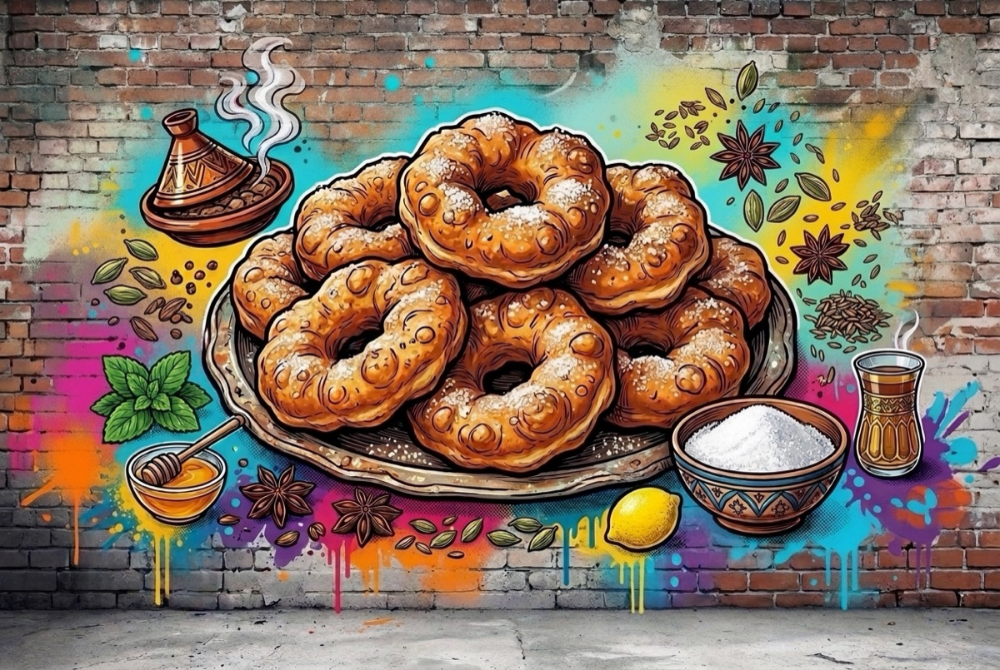

ספינג' מרוקאי
4 התפחות של חצי שעה · שמן 175–180 מעלות · מגישים מיד
🌱 פרווהמצרכים
- 1 ק"ג קמח
- 170 גרם סוכר
- 800–850 מ"ל מים פושרים
- 1 כף שטוחה מלח
- 50 גרם שמרים טריים
- שמן תירס לטיגון עמוק
- 500 גרם סוכר לגלגול
אופן ההכנה
- לשים בחוזקה קמח, סוכר, מים, מלח ושמרים כמה דקות, עד שהבצק גמיש. הבצק דביק, וזה בסדר: לא להוסיף קמח.
- מכסים בניילון נצמד ומתפיחים 30 דקות.
- משחררים את האוויר, לשים כדקה, מכסים ומתפיחים עוד 30 דקות. חוזרים על זה עוד פעמיים (4 התפחות בסך הכל).
- לקראת סוף ההתפחה האחרונה מחממים שמן עמוק במחבת עמוקה, על אש בינונית-גבוהה, לחום 175–180 מעלות. מניחים ליד הכיריים קערת מים פושרים ואת קערת הבצק.
- מרטיבים ידיים, תולשים חתיכת בצק, פותחים בה חור באצבעות ומורידים לשמן.
- מטגנים עד שצד אחד זהוב (1–2 דקות), הופכים ומטגנים עד שגם הצד השני זהוב.
- מוציאים בכף מחוררת ומסננים על מגש עם נייר סופג.
- מגלגלים בסוכר מכל הצדדים ומגישים מיד.
הערות
- הוספת קמח לבצק הדביק תהפוך את הספינג' לכבד.
- ידיים רטובות = הבצק לא נדבק.
מקור: מאקו אוכל (ארז קומרובסקי)